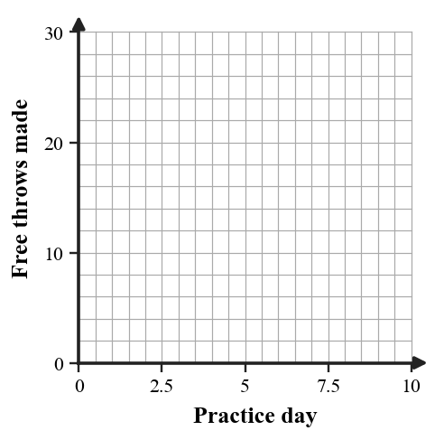

- Pick Starter
- Starter list steps to solve, teammates write
- Check answers with teacher
- Rotate starter
- The Starter names each step aloud while all teammates write the polynomial work.
- Group members compare written steps to the Starter’s explanation before checking.
- The Starter role rotates so every student leads a problem.
- The Starter gives only the answer instead of steps.
- Teammates wait instead of writing while the Starter talks.
- The same student leads every round.
Identify the two binomial factors in $(x-2)(x+4)$.
Identify the two binomial factors in $(x-2)(x+4)$.
Solution: The two binomial factors are $(x-2)$ and $(x+4)$.
Simplify $(3x^2+4x-7)+(2x^2-9x+5)$.
Simplify $(3x^2+4x-7)+(2x^2-9x+5)$.
Solution: Combine like terms: $(3x^2+2x^2)+(4x-9x)+(-7+5)=5x^2-5x-2$.
A student simplifies $(4x^2+3x-2)-(x^2-5x+6)$ as $3x^2-2x+4$. Critique the error and write the correct simplified expression.
A student simplifies $(4x^2+3x-2)-(x^2-5x+6)$ as $3x^2-2x+4$. Critique the error and write the correct simplified expression.
Solution: The error is not distributing the subtraction to every term in the second polynomial. Correct work: $(4x^2+3x-2)-(x^2-5x+6)=4x^2+3x-2-x^2+5x-6=3x^2+8x-8$.
A student models a rectangular garden with area $(x+4)(x-6)$ but the context says both side lengths must be positive. Revise the model or context so the expression and situation make sense together.
Performance notes: Evaluate operation choice, equivalent forms, and whether the expression structure matches the context or area model.
A student models a rectangular garden with area $(x+4)(x-6)$ but the context says both side lengths must be positive. Revise the model or context so the expression and situation make sense together.
Performance notes: Evaluate operation choice, equivalent forms, and whether the expression structure matches the context or area model.
Solution: The expression $(x+4)(x-6)$ can model a rectangle only when both side lengths are positive, so $x-6>0$ and $x>6$. One revision is to state that $x$ must be greater than $6$ feet. Another revision is to change the factor to a positive side length such as $(x+4)(x+6)$ if the context allows all positive $x$ values.
For a linear rule, what value of $x$ usually reveals the starting value in a table?
For a linear rule, what value of $x$ usually reveals the starting value in a table?
Solution: Usually $x=0$ reveals the starting value because it gives the output before any growth or change.
Rewrite “start at $15$ and add $2$ each day” as a slope-intercept equation using $d$ for days and $T$ for total.
Rewrite “start at $15$ and add $2$ each day” as a slope-intercept equation using $d$ for days and $T$ for total.
Solution: $T=15+2d$.
Relationship A has slope $3$. Relationship B has slope $-5$. Which relationship changes faster in magnitude?
Relationship A has slope $3$. Relationship B has slope $-5$. Which relationship changes faster in magnitude?
Solution: Compare magnitudes: $|3|=3$ and $|-5|=5$. Relationship B changes faster in magnitude.
The scatter plot shows trial results with one possible outlier. Identify the outlier and explain how it might affect a line of fit.

The scatter plot shows trial results with one possible outlier. Identify the outlier and explain how it might affect a line of fit.
Solution: The possible outlier is around trial $5$ with result about $40$, because it is much higher than the nearby trend. It could pull the line of fit upward and make the model overpredict typical results.
A linear model for delivery time is $T=4.2d+8$, where $d$ is miles. Predict the time for $15$ miles and interpret the intercept.
A linear model for delivery time is $T=4.2d+8$, where $d$ is miles. Predict the time for $15$ miles and interpret the intercept.
Solution: $T=4.2(15)+8=63+8=71$. The predicted delivery time is $71$ minutes. The intercept $8$ means the model includes about $8$ minutes of fixed time even at $0$ miles.
| Practice days | 1 | 2 | 3 | 4 | 5 |
|---|---|---|---|---|---|
| Free throws made | 11 | 14 | 15 | 19 | 22 |
Draw a reasonable line of fit on the blank scatter plot axes, write an approximate model, and use it to predict day $8$.

| Practice days | 1 | 2 | 3 | 4 | 5 |
|---|---|---|---|---|---|
| Free throws made | 11 | 14 | 15 | 19 | 22 |
Draw a reasonable line of fit on the blank scatter plot axes, write an approximate model, and use it to predict day $8$.
Solution: A reasonable line of fit could be $y\approx 2.7x+8$. At day $8$, $y\approx 2.7(8)+8=29.6$, so a prediction of about $30$ free throws is reasonable. Other close linear models may also be valid.
A graph of $y=4$ and a graph of $x=4$ are both described as “lines with a $4$.” Analyze the structure of each equation and explain why one is horizontal and one is vertical.
A graph of $y=4$ and a graph of $x=4$ are both described as “lines with a $4$.” Analyze the structure of each equation and explain why one is horizontal and one is vertical.
Solution: $y=4$ means every point has $y$-coordinate $4$, so it is horizontal. $x=4$ means every point has $x$-coordinate $4$, so it is vertical. The variable that is fixed tells which direction the line runs.
Design a small data set of six points that could be modeled by a line with positive slope near $4$. Include one point that is slightly above the trend and one below it, then write a reasonable line of fit.
Design a small data set of six points that could be modeled by a line with positive slope near $4$. Include one point that is slightly above the trend and one below it, then write a reasonable line of fit.
Solution: One valid data set is $(0,1),(1,5),(2,10),(3,12),(4,18),(5,20)$. A reasonable line of fit is $y=4x+1$. The point $(2,10)$ is slightly above the trend, and $(3,12)$ is slightly below it.
For $a=b+9$, what expression can replace $a$ in a second equation?
For $a=b+9$, what expression can replace $a$ in a second equation?
Solution: Replace $a$ with $b+9$.
Solve by substitution. State whether the result is one solution, no solution, or infinitely many solutions.
$$\begin{aligned}y=4x-6\\8x-2y=12\end{aligned}$$
Solve by substitution. State whether the result is one solution, no solution, or infinitely many solutions.
$$\begin{aligned}y=4x-6\\8x-2y=12\end{aligned}$$
Solution: Substitute $y=4x-6$ into $8x-2y=12$: $8x-2(4x-6)=12$. This becomes $8x-8x+12=12$, so $12=12$. The system has infinitely many solutions.
Construct a graphing strategy for $4x-2y\le 10$.

Your strategy must include rewriting the boundary, deciding solid or dashed, selecting a test point, and deciding the shaded side.
Construct a graphing strategy for $4x-2y\le 10$.
Your strategy must include rewriting the boundary, deciding solid or dashed, selecting a test point, and deciding the shaded side.
Solution: Rewrite the boundary: $4x-2y\le 10$ gives $-2y\le 10-4x$, so $y\ge 2x-5$ after dividing by $-2$ and reversing the inequality. Use a solid boundary line because the inequality includes equality. Test $(0,0)$: $0\ge -5$ is true, so shade the side containing the origin.
A poster claims to model “students need at least 20 total practice problems, with $x$ online problems and $y$ paper problems” using $x+y\lt 20$ and a dashed boundary.
- Revise the inequality so it matches the phrase “at least.”
- Describe the correct boundary and shading.
- Give one point that should be feasible and one point that should not.
A poster claims to model “students need at least 20 total practice problems, with $x$ online problems and $y$ paper problems” using $x+y\lt 20$ and a dashed boundary.
- Revise the inequality so it matches the phrase “at least.”
- Describe the correct boundary and shading.
- Give one point that should be feasible and one point that should not.
Solution: “At least 20” means $x+y\ge 20$, not $x+y\lt 20$. The boundary should be solid because equality is included, and the shading should be above/on the line $x+y=20$. A feasible point is $(10,10)$ because the total is $20$. A non-feasible point is $(5,8)$ because the total is $13$.
Expand: $(2x-1)(x+6)$.
What error occurs if you add exponents when multiplying $(x+2)(x+5)$?
For $y\gt 2x-1$, should the boundary line be solid or dashed?
Find the rate for 48 pages in 4 hours.
Expand: $(2x-1)(x+6)$.
What error occurs if you add exponents when multiplying $(x+2)(x+5)$?
For $y\gt 2x-1$, should the boundary line be solid or dashed?
Find the rate for 48 pages in 4 hours.
Solution: $(2x-1)(x+6)=2x^2+12x-x-6=2x^2+11x-6$.
Solution: The error is treating binomial multiplication like multiplying powers. You must distribute each term; you do not add exponents across sums.
Solution: Dashed, because $\gt$ does not include equality.
Solution: $48\div 4=12$ pages per hour.